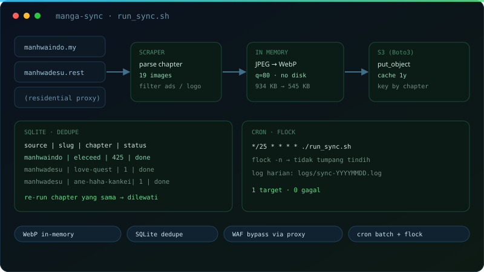

Manga Scraper → Cloudflare R2 Pipeline
A Python pipeline that scrapes manga chapters, converts every page to WebP in memory, and uploads them straight to Cloudflare R2 — no temporary files on disk.
EXECUTIVE SUMMARY
The backend pipeline fetches chapter pages from the source, resizes and encodes them to WebP through Pillow without writing intermediate files, then streams the bytes to Cloudflare R2 via the S3-compatible API. A local SQLite database keeps hashes of uploaded chapters so retries skip already-present objects instead of re-uploading everything.
A sibling desktop app wraps the same logic in a CustomTkinter GUI and packages it with PyInstaller into a portable .exe. It produces a local HTML manifest per chapter that WordPress or MangaStream can import directly, giving editors a drag-and-drop asset set without touching the command line.
ARCHITECTURE FLOW

Scraper → in-memory WebP encoder → S3/R2 streaming upload → SQLite dedupe. The desktop GUI reuses the same core and outputs an HTML manifest per chapter.
PROBLEM
Large chapters (hundreds of pages) used to fill the disk with temporary files and re-upload every page whenever a job was retried. Operators lost time cleaning temp folders and waiting for duplicate uploads.
APPROACH
Keep every page in memory during encode, stream bytes directly to R2, and record chapter hashes in SQLite before the upload starts. Retries compare the hash and skip objects that already exist.
RESULT
No temp files on disk; retry time drops to a fast hash check; the same core runs headless on a server or inside the portable Windows GUI.